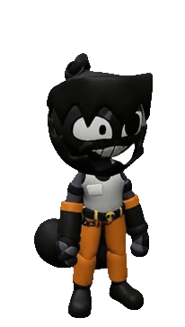
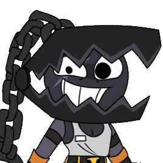

<!doctype html><html lang="en"><meta charset="utf-8"><meta name="viewport" content="width=device-width,initial-scale=1"><title>Cody — animation preview</title>
<style>*{box-sizing:border-box}body{margin:0;background:#26282b;color:#eee;font:15px system-ui,sans-serif}main{max-width:960px;padding:30px;margin:auto}h1{font-size:26px;margin:0 0 8px}.muted{color:#bebdc0}section{display:flex;gap:24px;flex-wrap:wrap}.stage{height:610px;width:355px;background:#5e6268;border:1px solid #858b93;position:relative}.stage>div,.stage>img{height:100%;width:100%;object-fit:contain;position:absolute;inset:0}aside{max-width:480px;flex:1;min-width:260px}button{font:inherit;color:#eee;background:#43474d;border:1px solid #81858b;padding:10px;cursor:pointer}button.on{background:#815a24}nav{display:flex;flex-wrap:wrap;gap:6px;margin:18px 0}label{display:block;margin:18px 0}p{line-height:1.6}a{color:#efb965}#icon{width:100px;height:100px;object-fit:contain}small{display:block;line-height:1.7;color:#c1bebe}</style>
<main><h1>Cody</h1><p class="muted">Damage / Control · Frontline · Physical</p><section><div class="stage"><div id="rig"></div></div><aside><nav id="buttons"></nav><label><input id="off" type="checkbox"> Animations off — show original idle image</label><label><input id="pause" type="checkbox"> Pause animation</label><p id="description"></p><small>Animation preview only. Combat damage, targeting, terrain and cooldowns are handled by the actual game. The source pixels and static artwork are preserved.</small><p><a href="CODY-README.md">Implementation notes</a></p></aside></section></main>
<script src="Characters/Cody/rig-data.js"></script><script src="js/rigs/cody-rig.js"></script><script>
const rig=CodyRig.create(document.getElementById('rig'));let mode='idle',phase=0,last=performance.now();
const descriptions={idle:'A planted, watchful stance. The chain-ball sways with its weight.',walk:'A slow, heavy stride.',basic:'Chain-ball Strike.',trap:'Iron Jaw! — setting a bear trap.',swing:'Ball and Chain — wide arc and heavy follow-through.',throw:'Chain Reaction — cast the ball and draw the chain back.',finale:'Iron Lockdown — the finishing circle swing.',hurt:'A short hit recoil.'};
for(const state in descriptions){const b=document.createElement('button');b.textContent=state;b.onclick=()=>{mode=state;phase=0;document.getElementById('description').textContent=descriptions[state];document.querySelectorAll('button').forEach(x=>x.classList.toggle('on',x===b));};document.getElementById('buttons').append(b);}document.querySelector('button').click();
document.getElementById('off').onchange=e=>{document.getElementById('rig').hidden=e.target.checked;document.getElementById('still').hidden=!e.target.checked;};
function frame(now){const dt=Math.min(.1,(now-last)/1000);last=now;if(!document.getElementById('pause').checked){phase=(phase+dt)%1.5;const style={trap:'codySetTrap',swing:'codySwing',throw:'codyThrow',finale:'codyFinale'}[mode];rig.update({moving:mode==='walk',animState:style?'cast':mode==='basic'?'attack':'idle',animStyle:style,animT:1.5-phase,animDur:1.5,hitT:mode==='hurt'?.1:0},dt);}requestAnimationFrame(frame);}requestAnimationFrame(frame);
</script></html>
